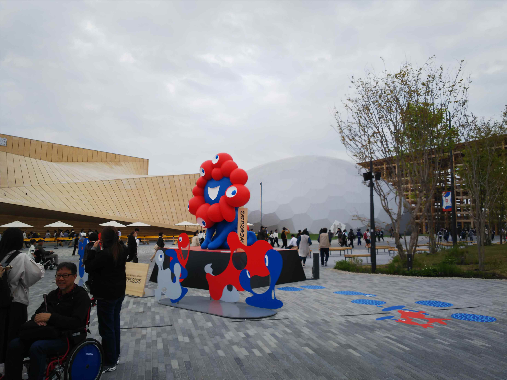

早速行ってきました！
夢洲にやって来ました。噂通り近未来的な感じです。
って感じるのがすでにジジイの証明っすね。
コスモスクエアからかなり距離あります。
しかし梅田から４３０円！高っ！
外に出る出口は１カ所。
テンション上がってきますね。
９時開場のところ、７時２０分ごろ着きました。６
～７０人ぐらい、すでに人が！
でもそれで正解でした。入場ゲートは空港なみで、
入るまで時間かかりますわ。
ついついガードマンさんに笑顔で不満を言ってしま
いました・・・

ミャクミャクがお出迎え。
まずは岩佐模型さんに敬意を表して、中国館へ。
朝一なのですいてました。コンパニオンさんは中国人しか
おらず、かつあんまり知識もなく、せっかく月探査計画の
話を聞いてあげたのに、全然答えが返ってこず・・・
期待してたロボットも出てこず、あんまりやる気を感じんかったっす。
でも、内容は面白かったで。おすすめです。
建物の面白さは一番のオーストリア館。
内容はそれほどでも・・・
うれしがって大屋根に登りました。
これはパビリオン側ですが、海側の景色は綺麗です。
結局、目玉のパビリオンは予約限定が多くて、なん
か不満
一番の見掛け倒しはベルギー館でした。
でもどこも人、人、人！ かなり賑わってまっせ！
大韓民国館。
今回、どこも薄型ディスプレイで動画を流してるん
ですが、ここが一番綺麗でした。さすがサムスン。
ドローンショーは初めてみたので「お～」て感じでした。
しかし２２時までていうてて２１時でどこも閉まるってどーゆーこっちゃ！怒るでしかし！（Ｃ 横山やっさん）
さて、あと何回行こかな。夏パスで何回も行こと思ってましたが、交通費高いしなー。
人気パビリオンの予約とれんかったらむなしいし、作戦考えんと。
皆様、行くならパビリオン予約競争にぜひ勝ち抜いてください！